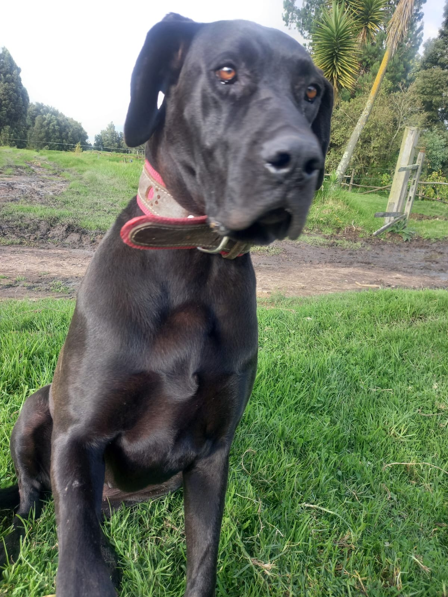
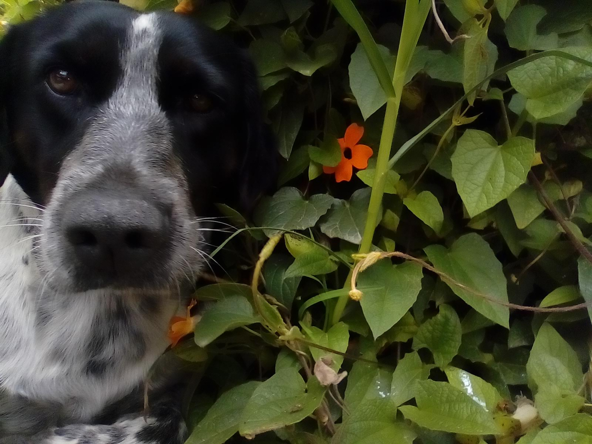
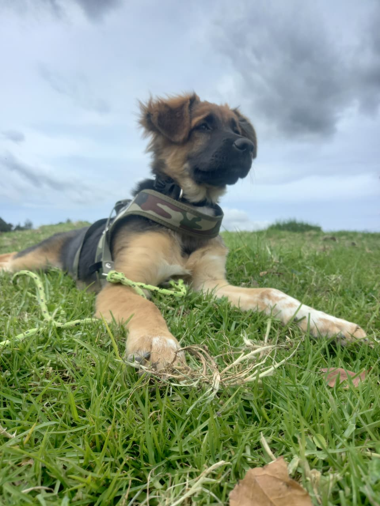
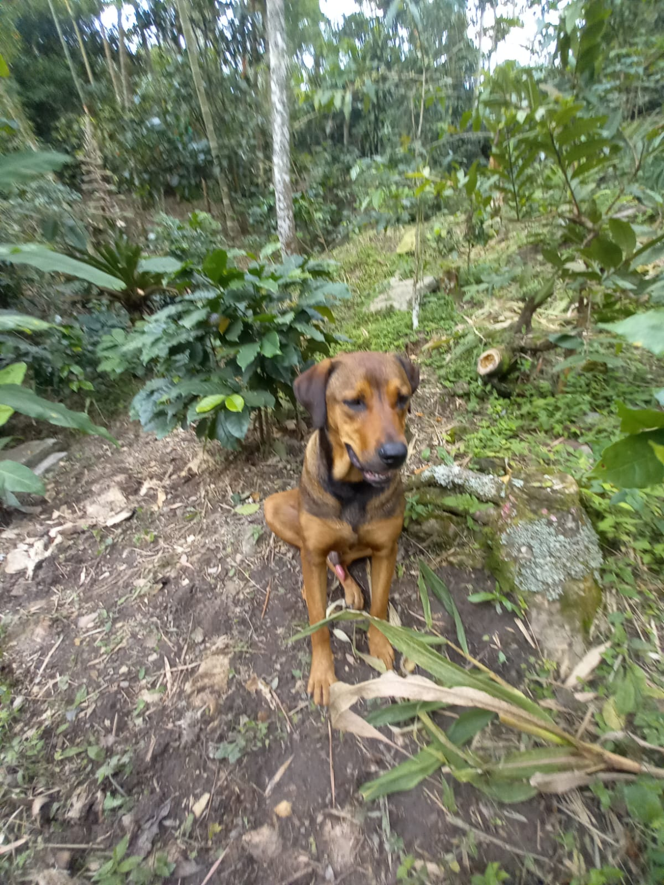
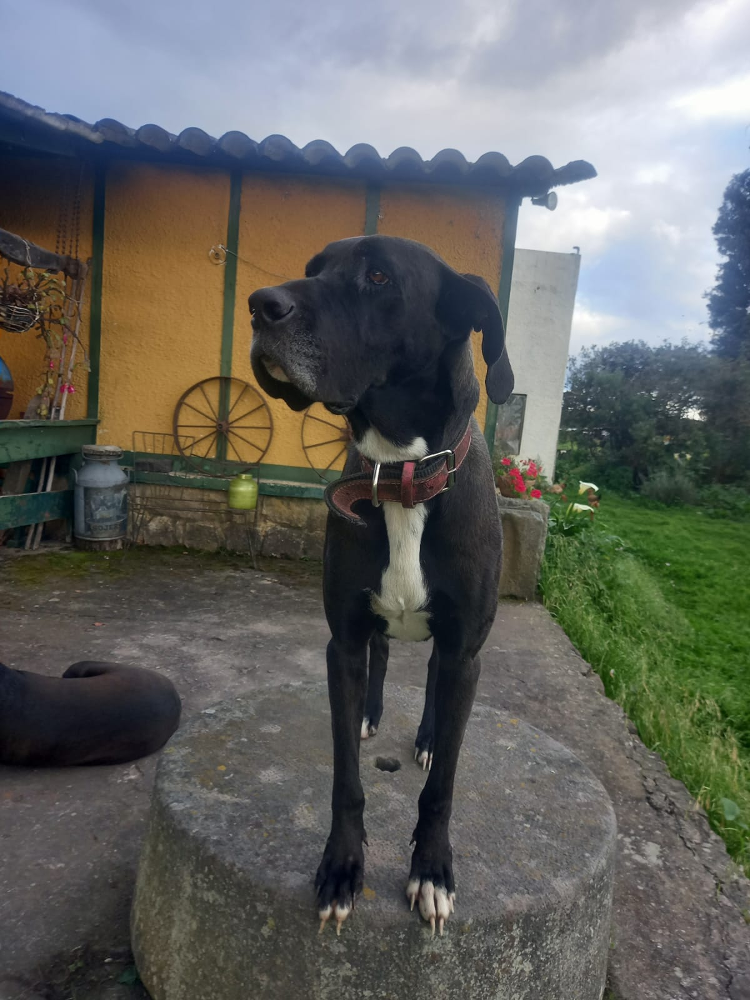
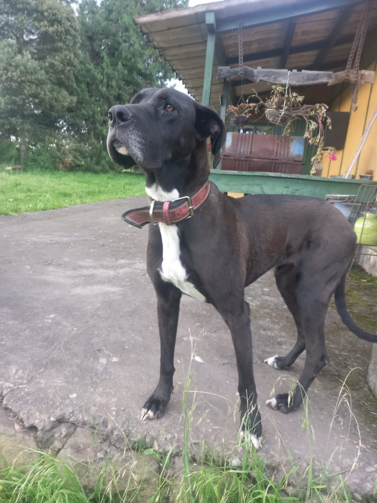

Pepa
Juguetona y leal2 años
Encuentra a tu mejor amigo y cambia una vida para siempre. Ellos te están esperando.

Ellos están buscando un hogar lleno de amor. Conoce a nuestros amigos que esperan por ti.

2 años

3 meses

6 años
Un proceso simple y transparente pensado en el bienestar de nuestros amigos peludos.
Navega por nuestra lista de perritos y encuentra al que conecte con tu corazón.
Cuéntanos un poco sobre ti y el hogar que le puedes ofrecer a tu nuevo amigo.
Tendremos una breve charla para asegurarnos de que es la familia perfecta.
Lleva a tu mejor amigo a casa y comiencen una nueva vida juntos.
El amor lo cambia todo. Mira la increíble transformación de nuestros rescatados.

Antes
DespuésLola fue encontrada en condiciones muy tristes. Estaba desnutrida y tenía miedo a las personas. Gracias a una familia amorosa, hoy es la perrita más alegre y juguetona del parque.
"Adoptar a Lola no solo salvó su vida, también llenó de alegría nuestro hogar." — Familia Martínez